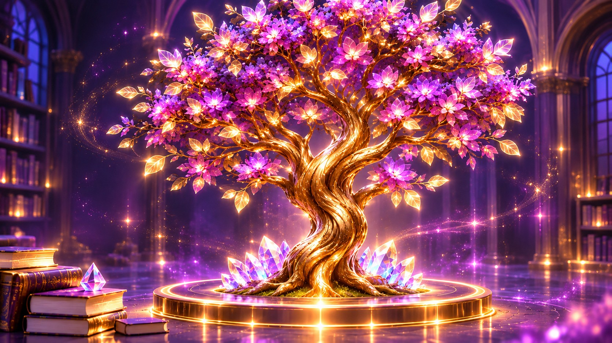
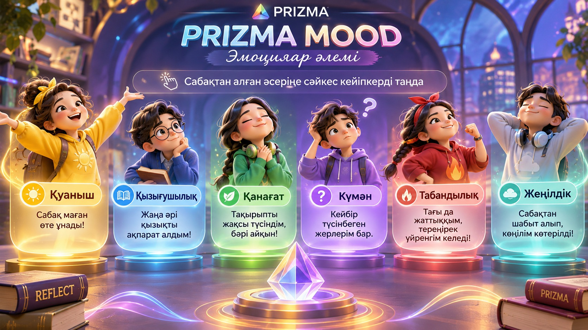

💬
LIVE REFLECT
Оқушы пікірін нақты уақытта қабылдауға арналған онлайн құрал.
Құралды ашу →
PRIZMA TREE
Ойлар ағашы — оқушылардың пікірлері нақты уақытта түрлі түсті жапырақтарға айналатын интерактивті кері байланыс құралы.
Құралды ашу →
PRIZMA MOOD
Авторлық кейіпкерлер арқылы сабақтан алған әсерді білдіру және нақты уақытта жиынтық кері байланыс алу.
Құралды ашу →